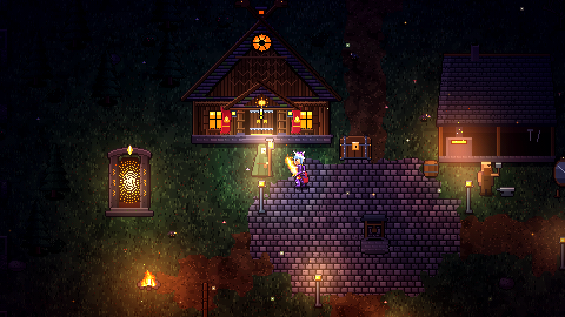
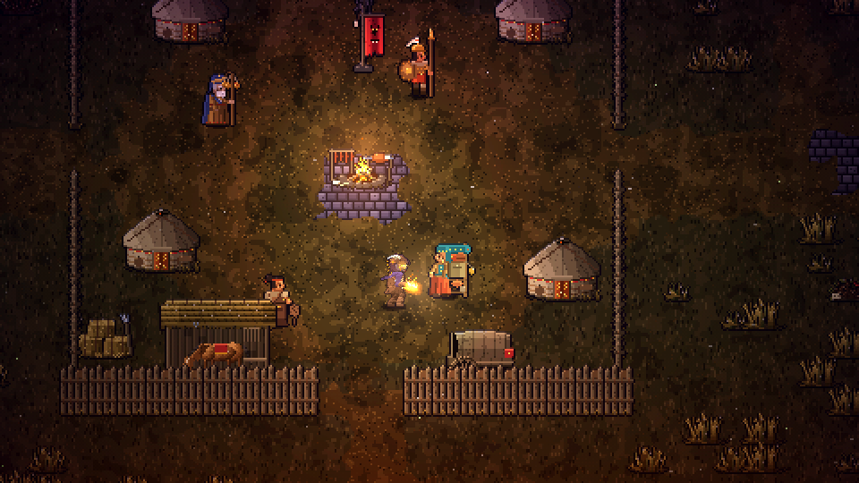
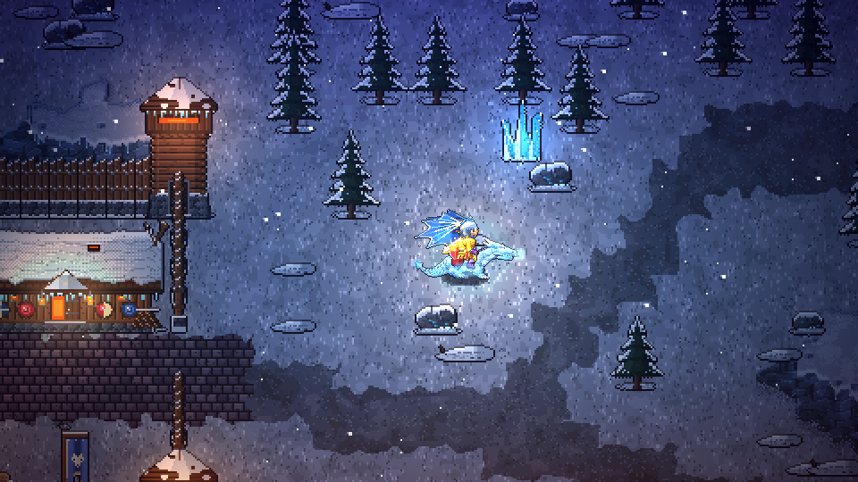
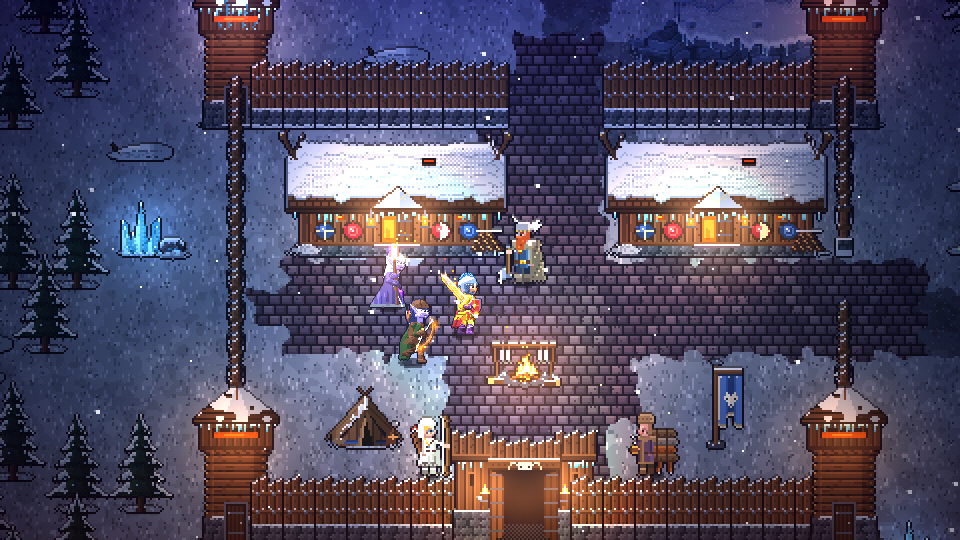
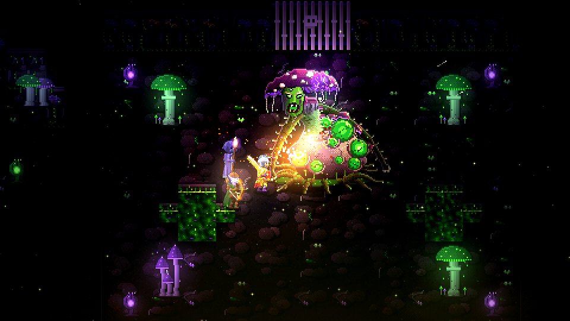

Aufträge
In der Glutsenke beginnt alles mit einer Bitte von Maren. 85 Quests führen dich bis vor den Aschethron.

Vor Generationen fiel Glut vom Himmel auf die Senke unter dem Aschegrat. Jetzt ist der Berg erwacht, und Ignaroth, der ihn weckte, liegt erschlagen in seiner Schmiede.

„Ignaroth ist gefallen. Warum fällt dann immer noch Asche?“

„Weil er nie der Herr war. Auf Varkhuls Siegel glüht ein zweites Zeichen, eine Krone aus Flammen.“

„Ich habe sie gesehen. Sie brennt im Norden, auf einem Thron aus Asche.“
„Malgareth. Mit diesem Namen haben uns die Alten als Kinder Angst gemacht.“
„Er ist kein Märchen. Er wartet. Und er weiß längst, wer seinen Diener erschlagen hat.“
„Dann reitest du bei Sonnenaufgang in die Steppe. Folge der Krone, bis sie aufhört zu brennen.“

In der Glutsenke beginnt alles mit einer Bitte von Maren. 85 Quests führen dich bis vor den Aschethron.

Händler wie Imra kaufen deine Beute und haben, was du für den nächsten Kampf brauchst.

Ab Stufe 20 trägt dich ein Reittier durch die Welt. Die seltensten lassen nur Bosse fallen.

In Frosthold und überall sonst triffst du andere Spieler. Bis zu 40 teilen sich eine Welt.

Vierzehn Gebiete und sieben Bosse bis Stufe 40. Danach warten die Glutprüfungen.